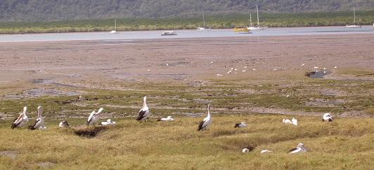
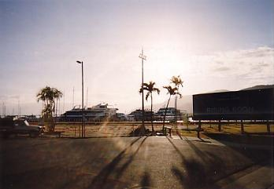
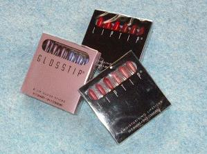

キュランダから帰った私たちは、夕飯はどこで食べよう？明日の朝食は…？などと一休みしながら相談をしますが、なぜかホテルで食べるということは更々頭にありませんでした。（＾ｍ＾
夕食の方はこれから街を歩いてみて行き当たりばったりで、朝食は今朝のおかゆが気に入ったようで、昨日の大きなスーパーへ行けばきっと置いてあるだろう…ということで暮れはじめた外へと飛び出しました。
ホテルは繁華街からちょっと外れたところにあり、店もなければ人気もない寂しい海岸沿いの道をしばらく行くと、ちらほらとお店が見えてきた舗道にテーブルや椅子のセットが並べられており、それがずうっと先の方まで続いています。
なんだ？ なんだ？
と、テーブルセットの間を縫うように歩きながら見て行くと、間口が１間（約１８０cm）くらいの小さな店が沢山並んでおり、ちょっと広いかな？と思うと土産物やディジュリドゥを売る店やＣＤショップなどもありますが、勿論そんな店の前にもテーブルが置かれています。
小さな店の中はどうなっているのかと覗いてみると、高めのカウンターがあるのみでそこで座って食べるような椅子は置かれていません。
カウンターとその奥の調理場だけがお店のスペースとなっているわけで、そこで買ったものを舗道のテーブルへ持って行って食べるようですが、ロック調の音楽や不思議に落ち着くディジュリドゥの音色が流れていたりするので、心地よい音楽の流れている場所というのも席選びの重要なポイントとなりそうです。
オーストラリアでは日本のようにどこの飲食店でもお酒が置いてあるわけではないので、お酒はバーか酒屋さんで買うことになるのですが、カウンターの上に酒ビンらしき物がいっぱい並んでいたのがバーであったようです。（この時点では私もそのことを知りませんでした＾＾；）
カフェもあるので、椰子の木の間から白いクルーズ船を眺めながらティータイムもいいですね。
ひときわ明るい大きな店がナイト・マーケットで、中に入ってみると広々としたフロアーの中央部分全体がテーブル席となっている食堂街になっており、バイキング形式に何種類かの惣菜が並べられている中から欲しい物を選べる店や、ラーメンやお寿司、パンにデザートにお酒などが売っている店が両端に並んでいました。
その奥に入ると通路が３本に分かれており、土産物から衣類カバン類などなどの店が通路の両側にひしめき合って並んでそれが海岸通りから一本中に入った大通りまで繋がっているのです。
ひとまずぐるりと一周をして夕食＆買い物の候補の一つに決めて先へ進みます。
この通りはエスプラネードと呼ばれる若者に人気のスポットだそうで、野外席の群れは約４００ｍに渡って続いていました。
ナイトマーケットの中を通って反対側の道路に出れば目指すスーパーのある通りになっているはずですが、何しろ初めて歩く道ですから、マップの見方が正しいかどうかを確認しなければ安心できないので、カジノが見えるところまで行ってからスーパーへ…
日本のスーパーの何倍もありそうな店内を、二人で手分けして隈なく探し回りましたが「おかゆ」はとうとうみつからず、前日の朝焼きたてのパンを並べていたショーケースからそれぞれに好みのパンを袋に入れ、飲み物などと一緒にレジで支払いを済ませて、今度は海岸通りの一本中の大通りを歩いてみます。
広いスーパーの中を駆けずり回ったせいか目指す「おかゆ」がなかったせいか、疲れがどっと出てきて、何も考える気力もなく行き当たりばったりもへったくれも忘れて、何軒かのレストランの前を通り過ぎて足はホテルへの方向に向いて、土産物売場の並ぶ往きとは反対側からナイト・マーケットに入り、私は中のトレイを買って中華風のバイキング料理を、Tさんはラーメンを食べてお腹を満たしました。
２０cmくらいのカレー皿のような楕円形のトレイを片手に食べ物を選んでいると、若い男性がマーガリンの大きい容器くらいの小のトレイを買っているのが目につき、若い男の子があんな小さな器でいいのだろうか？と思っていると
（◎０◎！
十数種類の惣菜が並んでいたのですが、彼はその端から順番にあれもこれもと味の違いもなんのそのと小さなトレイに乗せていき、
「まだ、乗せるのか？（◎_◎;;」
とうとう全種類を山のように「オテンコ盛」にして去っていくのを、ぽかーんっと見てしまいました。（＾ω＾；
まだほんのりと明るかった往きには気がつきませんでしたが、舗道のオープンレストランの上には小さな豆電球が幾重にも飾られ、テーブルの上にはブランデーグラスの足を取ったようなぽっこりとしたグラスに赤や青のろうそくが灯された席は、若者たちで半分くらい埋まって楽しそうに談笑しているのを眺めながら、ひたすらホテルへ向けて重い足を引きずります。
三日目は何も予定をしておらず、気ままに目が覚めたときから適当にパンをかじり、のんびりと散歩気分でお出かけです。
熱帯のリゾートエリアであるポートダグラスまで２０ｋという近さなので、一日そちらで遊ぶという案も出たのですが、英語が得意ではない二人だけで行くのはちょっと冒険過ぎるということで、一日ケアンズを歩いて回るのもいいのでは？ということになった次第です。
海岸通りの海側にある公園を歩いて何気なく海を見ますと、
「あらら…」
普通砂浜のない海岸というものは防波堤などというブスイな物で囲まれているのですが、ケアンズではグレート・バリア・リーフの群れが湾の入り口をしっかりと塞いでしまっているのであまり波が立たないようで、せり出した木道に手すりがついているだけなので、そこから見えるはずの海がすっかり潮が引いてしまって水がありません。
木道の手すりから覗いてみると、水のなくなった泥の上を「ムツゴロウ」のような魚が所々に残っている水溜りで遊んでいるようで、何種類かの鳥が餌をついばみながら忙しく歩き回っており、こんもりと盛り上がったところでは白い大きな鳥がくつろいでいるのが見えたので、その近くまで行ってしばしバードウォッチングに専念。

この鳥たちがいるところは私たちがカメラを構えているところから３ｍと離れていなかったのですが、ご覧の通りまったく人間など気にしていないようです。
大きな白の羽の先が黒い鳥は鶴のように見えましたが、こんな暖かいところに鶴がいるのでしょうか？
写真右側にはグレート・バリア・リーフへ向かうクルーズ船やフェリーの発着場であるマーリン桟橋があり、船が沢山往きかっている川のようなところが海で、左側にケアンズ湾が広がっていますがあまりきれいな海ではありません。
ケアンズでの見所はなんと言ってもグレート・バリア・リーフなのだそうで、美しい珊瑚礁とナポレオン・フィッシュなどの熱帯魚が泳ぐ海でのシュノーケリングやダイビングなど、一年中泳ぐことができるのだそうです。
キュランダへの添乗員君は前日にグレート・バリア・リーフに行って来たのだそうですが、波が高くて船酔いの人が続出して大変だったそうで、密かに今回の予定に入ってなかったことを幸運に思ったりしました。（≧ｖ≦；
お土産探しに街の中の店を巡り歩き、この日の昼食はおひげのお兄さんがいたコンビニの隣のカフェ・チャイナで飲茶を食べることに決め、ドアを押して店内に入りますとそこはラーメンコーナーのようで、好きな具が選べるということでそれもまた魅力的！
迷った挙句夜はラーメンを食べに来ることを決めてもうひとつのドアの向こうにある飲茶の席に座りました。
湯気の立っているセイロを次から次へと店員さんがワゴンに乗せて回ってきて、蓋を開けて料理を見せ料理名を告げますので、欲しいものを指差せばテーブルの上に置いてレシートに書き込んでいきます。
Ｌ字型の大きな店でしたが、いくつかのツアー客なども入って来て満席に近い状態ながらも、私たちはレジの前のスミッコの席でゆったりと食事を済ませ、大満足で店を出ました。
ケアンズの街はそんなに大きくありません。
バスもありましたが、バスを待っているよりも歩いたほうが早いという距離だったので、７～８００ｍほどのところを歩いて行き来していたわけですが、店があるところは大体固まっており、道を一本渡ったら急に人通りがなくなっていたりするので判りやすい街です。
三日目のその日は土産物を探してあちこちの店を歩き回って、手荷物がいっぱいになったのでいったんホテルに戻ってまた出掛けたのですが、そんなことも気にならないくらいの距離です。

「こんなところにプールがある!!」
と、またもやホテルから繰り出して右のようなロマンチックに暮れ行く海辺を一番端まで歩いてみると、大きなプールが現れて二人して大興奮！
と言うのは、せっかく水着を用意してきたにもかかわらずホテルのプールでは誰も泳いでおらず、
「見世物になるだけだからやめよう…」
と諦めていたのですが、こんなところにこんなプールがあるのを知っていたなら昼間遊びに来ていたのに…と、すでに遊泳時間終了の看板が掲げられたチェーンを跨いで、未練たらたらとプールの周りを歩いて諦めました。（＾へ＾；
帰ってきてから知ったのですが、このプールは作られたばかりだったそうです。
プールの近くが港になっており、到着した朝にみつけたザ・ピア・マーケットプレイスがあったのですが、お土産はほとんど買ってしまったのでそんなことも忘れてしまって、カフェ・チャイナへ直行。
この店は日本語のメニューがあるので候補の一つに入っていたのですが、まさか一日に二度も食べに来ることになろうとは…
オーストラリアまで来てなんで中華なのかと笑いながら具沢山のラーメンを食べましたが、機内食の強烈なスパイスがここまで尾を引いたというわけではなく、要するに主婦は自分で作って後片付けをしなくてもいいのなら何でも良かったのかもしれません。（＾o＾；
ちなみに私は海鮮ラーメンを食べましたが、けっこう美味しかったです。
冷蔵庫のビールがまったく補充されないままなくなってしまったので、隣のコンビニで買って帰ろうと飲み物の並んでいるガラス張りの冷蔵庫の前で、それらしき物のラベルを読んでBEERという文字の入っているものをレジへ持って行くと、おひげのお兄さんが驚いたような仕草をして袋に入れてくれ、あの驚きは一体なんだったのだろう？と気になりながらも、
「バイ バーイ！」
と三日間の常連ですっかり顔なじみになったお兄さんに別れを告げて店を出ました。
は？
昨日はこのコンビニに寄ったことが書いてなかったって？
そ、そりゃあ、一分始終を書くのは大変ですから「ハブキ」だってありますよぅ…（A＾～＾；
実は、最初の日に大好きなミントチョコをここでみつけたＴさん、10個くらいバーチョコを買っていったのですが、いつの間にかそれがなくなってしまって昨日も同じ物を買いに来たのですが、その後で行ったスーパーで大判の板チョコを見つけてまたまたそれを何枚か買い求め、どうやら板チョコの方が美味しかったとみえてこの日は流石に手が出なかったようです。
「なんで、梅干が一個だったのよう…」
と、もしかしたら見逃しているかもしれないと性懲りもなくおかゆも探しながら、お決まりのように明日の朝食の買い出しに行ったスーパーで、Ｔさんブチブチ…
「そんなこと言ったってぇ…」
ガイドブックには
食品の持込は全面禁止と書いてあり、
インスタント・ラーメンやお菓子などが発見された場合は
正直に申告したので持ち込めたようなので、こんなことならもっと持って来ればよかった…と、ない物ねだりの贅沢をいつまでも言ってるわけにもいかず、昨日買ったパンが気に入ったので同じ物を袋に入れ、総菜屋さんにあったサラダが美味しそうだったのでそれもパックに詰めてもらい、日本のものより格安になっていた大判の板チョコをそれぞれ大量にカゴに放り込み、清算を済ませて帰路に着きました。
「あれって、なんだろう？」
【xxx】 という看板があちこちにあるのをみつけてＴさんが聞いてきますが、そう言われると目につきはじめたものの、ガイドブックを斜め読みした限りでは気がつかなかったもので、
「さあー なんだろうね？」
などとさして考えもしないで何軒もの【xxx】の近くを通り過ぎてホテルに帰りつき、お風呂に湯を入れながら買ってきたパンやチョコなど持って帰る荷物の整理と、明日必要になるものなどを分けていたりしながらも、Ｔさんはチョコをポリポリ…私はコンビニのお兄さんが驚きの仕草をした「BEER」と書かれたビンの蓋を開け、とくとくとく…と往きの機内食のときにいただいてきたプラスチックのグラスに注ぎ、先ずはひと口…
さて、最初からないものとなっていればそれはそれでいいのですが、さあ飲もう！という段階になってからないとなると、なおさら欲しくなるのが人間というもので、どこかに自販機があるだろうと財布を片手に一階のロビーをうろつきましたが、ジュースの自販機はあるもののビールはひとつもない！
諦めてトボトボと部屋へ帰ってくると、Ｔさんが「困ったときのダイヤル」って言うのがあったと思い出し電話をしてくれました。
「緊急ですか？」
と聞かれて、こんなことで電話をかけるところではなかったような気がして、それでも電話をかけてしまったからには身の縮む思いで、
「冷蔵庫のビールが補充されてないんですが…」
まったくもう、これだからオバサンは…と言われそうなお手本を実践してしまいました。（＾へ＾；
まさか連泊をするホテルの冷蔵庫の中身が補充されていないなんて考えもしなかったことで、間もなくホテルの女性が缶ビールを６本も持ってきていくつかを冷凍ケースに入れていき、オーストラリアでは原則的にチップは不要でしたのでそんなことは考えもしなかったのですが、今にして思えば「特別なことをお願いした」のですから、さり気なくチップを渡すべきだったと反省しています。
その後、買ってきた土産物などをスーツケースに詰めながら、ふと見ると土産用に買ってきた地ビールの缶のパッケージがあの【xxx】となっており、疑問に思っていたあの店は酒屋であったことに気がつき、あんなにあったのにどうして一軒も覗いて見なかったのだろう？と大爆笑。

どこへ行っても土産物には悩まされるのですが、これまた
「どこがオーストラリア？」
と言われてしまいそうな物ですが、ちょっといいなと思ったのがこの口紅とアイシャドウのセットで、以前に一度口紅を買ってきたことがあって、香りがきつくて最後まで使い切ることができなかったので、以来化粧品類は敬遠していたのですが、その時の気分で使い分けができるように少しずつ色の違う物がセットになっているのが気に入って、いくつか買って来ました。
普通の綿棒の２～３倍ほどの大きさのものが６本入っており、引き出し式のケースを引き出すと綿棒の頭の下に当たる部分から、中箱が後ろに倒れるようになって鏡がついており、アイシャドウの方はそこにスポンジのブラシもついており、私としては旅行などに持って行ってその日の洋服に合わせてバリエーションを楽しんでいます。
もうひとつ面白いと思って買ってきたのが、これまたどこにでも売っているようなマカダミア・ナッツですが、いろいろな味のものが揃っており、中でも「なぜに？」と不思議だったのがわさび味のもので、試食してみるとこれがまた合うんです。
…とまあ、あれやこれやと放り投げられてどこかに打つかってもビールの缶が開かないようにとか、板チョコが割れないようにいろいろと工夫をしてスーツケースに詰め込み、翌日の朝は着ていた寝巻き代わりの衣類やスリッパ、化粧品などを入れるばかりに準備して帰り支度は用意万端整いました。
話が前後してしまいますが、ビールが届いた時点から私はとっととお風呂を済ませておりまして、Ｔさんがいつも持って来ている百均で買ったという小さめの洗面器を、最初の夜からお借りしていたのですが、これがスンゴイ
Ｔさんは大変こまめな方で、毎晩お風呂で洗濯をして汚れ物をそのまま持って帰らないようにしているようで、汚れ物をそのまま持ち帰る私がいつも先にお風呂を使わせていただいてましたが、先ずその洗濯に洗面器は必需品でありました。
日本国内でもトイレや洗面所がお風呂と一体化しているホテルが増えて来ていますが、浴槽内で体を洗ったり髪を洗ったりするのに、シャワーのお湯が飛び散らないようにカーテンを浴槽内に入れて使わなくてはなりませんが、それってちょっと抵抗ありません？
ましては、そのシャワーが造り付けで手元で使えない場合など、次に使う人のための洗いが大変だと思いませんか？
小さな洗面器はそんな悩みを全て解消してくれました！
肩まで浸かれないお湯は洗面器ですくって…、お湯を流して身体や髪を洗ったりするにも便利ですが、ズボラな私は最初に溜めたお湯で温まってから栓を抜いて少しお湯を減らし、身体も髪もそこで洗ってしまいました。
座ったまま洗面器でザバザバとシャンプーを洗い流してからお湯を抜いて、最後の仕上げだけカーテンを引いた浴槽内でシャワーを使いました。
なんとまあスンバラシイ…とばかりに私も早速旅行セットのひとつに加えようと決めました。
話は変わりますが、三日間お世話になった部屋にはちょっと離れていますが海の見える側にバルコニーがあり、夕方には海のほうから群れになって飛んでくる鳥たちを見ることができ、白い大きな鳥がすぐ近くの木をネグラにしているようで、いくつかの群れが飛んできていましたが、翌朝見てみると木が真っ白に見えるくらいの鳥が集まっており、三々五々海を目指して飛んで行くのを目の当たりに見ることができました。
おかゆを食べるために持ってきたプラスチックのスプーンもきれいに洗ってとっておいたので、サラダを食べるのに手づかみで…などという原始的な作法を実践することもなく、機内食のプラスチックのコップはサラダを盛る器となり、本当に今回は食事にお金を使わなかったと笑ってしまいました。
ケチケチ作戦を取ったわけではないんですが、その場その場で目についた食べたい物を食べていたらこんなことになってしまったので、これはこれでまた楽しい思い出となるでしょう。
沢山の自然に触れることができたケアンズともお別れで、来た時には暗くて見えなかったのですが、空の上から見るオーストラリアの海には澄んだエメラルドグリーンのグラデーションで描かれたバリアリーフが沢山見え、これもまた感動でした。
作成:2005-05-02